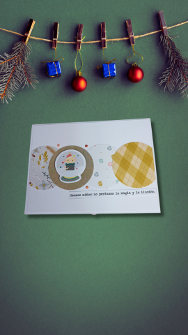
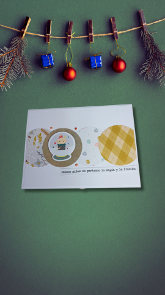

Acerca de mi
¡Bienvenido a mi portafolio de innovación tecnológica!
Soy un apasionado por la tecnología y las soluciones creativas que generan impacto positivo. A lo largo de mi trayectoria, he trabajado en proyectos que combinan innovación, eficiencia y funcionalidad, con el objetivo de resolver problemas y aprovechar al máximo el potencial de las herramientas tecnológicas. Mi enfoque se centra en entender las necesidades de cada cliente o proyecto, diseñando soluciones personalizadas que conecten con las personas y añadan valor real. Desde el desarrollo de estrategias tecnológicas hasta la creación de productos digitales innovadores, cada paso refleja mi compromiso con la calidad y la mejora continua. Además de mi experiencia técnica, me motiva aprender constantemente, explorar nuevas ideas y colaborar con otros para hacer realidad proyectos que marcan la diferencia. Este portafolio es una muestra de lo que he logrado y un punto de partida para lo que puedo construir junto a quienes comparten esta visión.
Acerca de mi
Soy un apasionado por la tecnología y las soluciones creativas que generan impacto positivo. A lo largo de mi trayectoria, he trabajado en proyectos que combinan innovación, eficiencia y funcionalidad, con el objetivo de resolver problemas y aprovechar al máximo el potencial de las herramientas tecnológicas. Mi enfoque se centra en entender las necesidades de cada cliente o proyecto, diseñando soluciones personalizadas que conecten con las personas y añadan valor real. Desde el desarrollo de estrategias tecnológicas hasta la creación de productos digitales innovadores, cada paso refleja mi compromiso con la calidad y la mejora continua. Además de mi experiencia técnica, me motiva aprender constantemente, explorar nuevas ideas y colaborar con otros para hacer realidad proyectos que marcan la diferencia. Este portafolio es una muestra de lo que he logrado y un punto de partida para lo que puedo construir junto a quienes comparten esta visión.
Aquí encontrarás una colección de los proyectos que he llevado a cabo, diseñados para resolver desafíos del mundo real a través de tecnología y creatividad. Desde soluciones digitales que potencian negocios locales hasta desarrollos tecnológicos que optimizan procesos cotidianos, este espacio refleja mi pasión por la tecnología aplicada y mi compromiso con la innovación. Explora cada proyecto para descubrir cómo las ideas se transforman en herramientas prácticas que generan valor, conectan personas y construyen un futuro más eficiente y sostenible. ¿Listo para descubrir lo que podemos lograr juntos?
SECCION 2
Contactate con nosotros
 

.png){kind=link}
SECCION 3
Aquí encontrarás una selección de los proyectos que he llevado adelante, cada uno diseñado para abordar desafíos específicos y aportar soluciones tecnológicas innovadoras. Desde herramientas digitales que optimizan procesos hasta estrategias creativas que fortalecen la conexión entre marcas y sus clientes, mis proyectos reflejan un enfoque práctico, centrado en resultados y adaptado a las necesidades de cada caso. Cada iniciativa combina creatividad, conocimiento técnico y una visión orientada al futuro, demostrando cómo la tecnología puede ser una aliada poderosa para transformar ideas en realidades. Explora los proyectos para descubrir cómo cada solución no solo resuelve problemas, sino que también crea oportunidades y aporta valor sostenible. Si tienes una idea o desafío en mente, ¡estaré encantado de ayudarte a convertirlo en el próximo gran proyecto!